{{ToolsSidebar}}
The about:debugging page provides a single place from which you can attach the Firefox Developer Tools to a number of debugging targets. At the moment it supports three main sorts of targets: restartless add-ons, tabs, and workers.
There are two ways to open about:debugging:
about:debugging in the Firefox URL bar.When about:debugging opens, on the left-hand side, you'll see a sidebar with two options and information about your remote debugging setup:
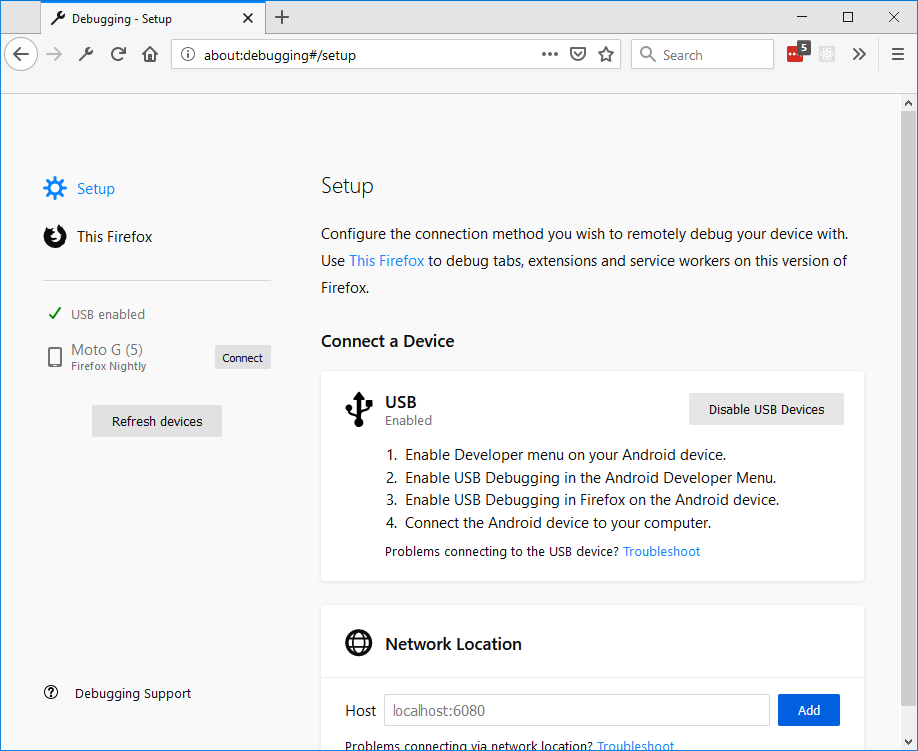
If your about:debugging page is different from the one displayed here, go to about:config, find and set the option devtools.aboutdebugging.new-enabled to true.
Firefox supports debugging over USB with Android devices, using the about:debugging page.
Before you connect:
If your device doesn't appear in the lefthand side of the about:debugging page, try clicking the Refresh devices button.
If it still doesn't appear, it may be because the link between your Android device and your computer is not authorized yet. First make sure you have installed Android Debug Bridge from Android Tools on your computer in order for it to be able to connect to your device. Next, disable every debugging setting already activated and repeat the steps described before. Your device should show a popup to authorize your computer to connect to it — accept this and then click the Refresh devices button again. The device should appear.
Note: You do not need to install the full Android Studio SDK. Only adb is needed.
To start a debugging session, first open the page that you wish to debug and then click Connect next to the device name to open a connection to it. If the connection was successful, you can now click the name of the device to switch to a tab with information about the device.
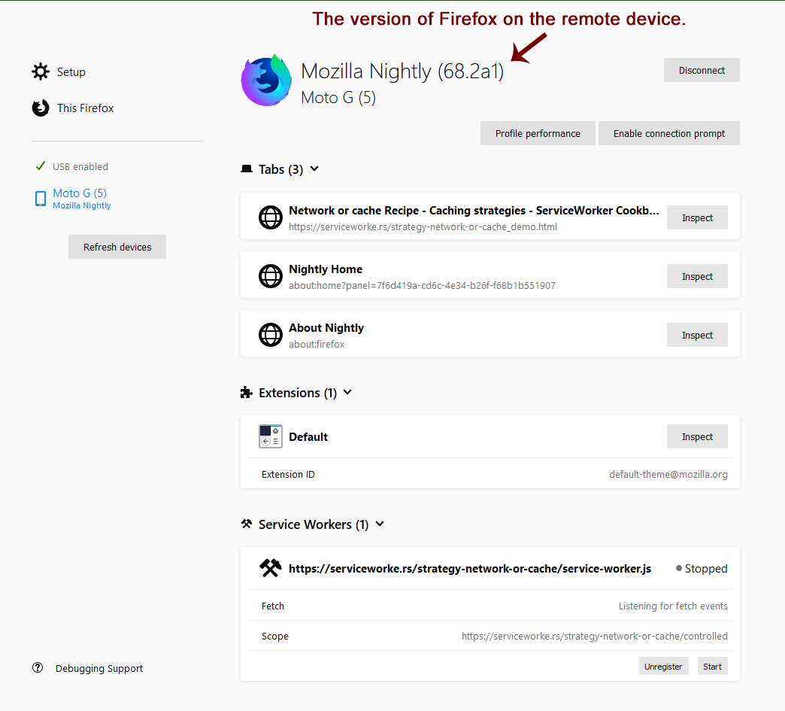
The information on this page is the same as the information on the This Firefox tab, but instead of displaying information for your computer, it displays the information for the remote device with the addition of a Tabs section with an entry for each of the tabs open on the remote device.
Note: If the version of Firefox on your remote device is more than one major version older than the version running on your computer, you may see a message like the following:
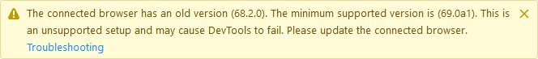
In Firefox 76 and above, the message can look like the following:
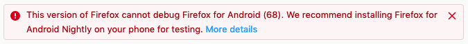
See Connection for Firefox for Android 68 for more information.
In the image above, there are three tabs open: Network or cache Recipe, Nightly Home, and About Nightly. To debug the contents of one of these tabs, click the Inspect button next to its title. When you do, the Developer Tools open in a new tab.
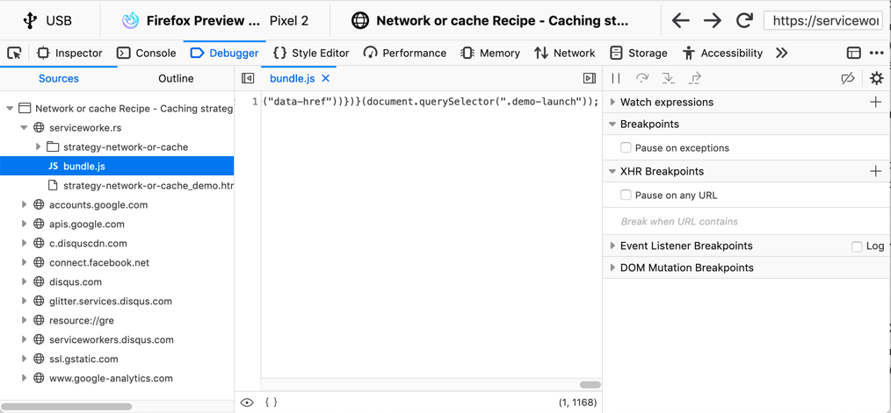
Above the usual list of tools, you can see information about the device you are connected to, including the fact that you are connected (in this example) via USB, to Firefox Preview, on a Pixel 2, as well as the title of the page that you are debugging, and the address of the page.
Starting in Firefox 78, the URL bar is editable, so that you can change the URL used by the browser on the remote device, by typing in Firefox for Desktop. You can also reload the page by clicking the Reload button next to the URL bar, and (starting 79), navigate backward or forward in the browsing history with the Back and Forward buttons.
You can connect to a Firefox Debug server on your network, or on your debugging machine using the Network Location settings of the about:debugging page.
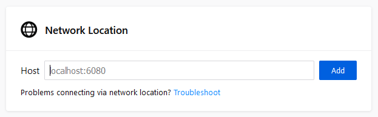
Enter the location and port on which the debugger server is running. When you do, it is added to the Network locations list along with the devices, as shown below:
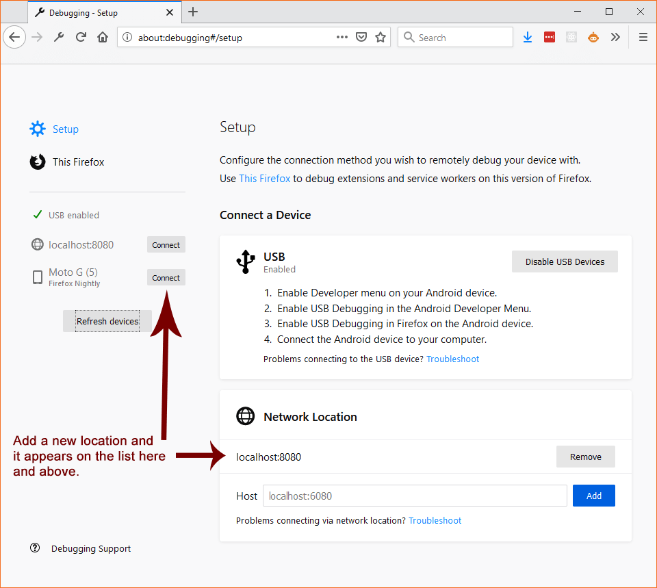
The This Firefox tab combines the features of Extensions, Tabs, and Workers into a single tab with the following sections:
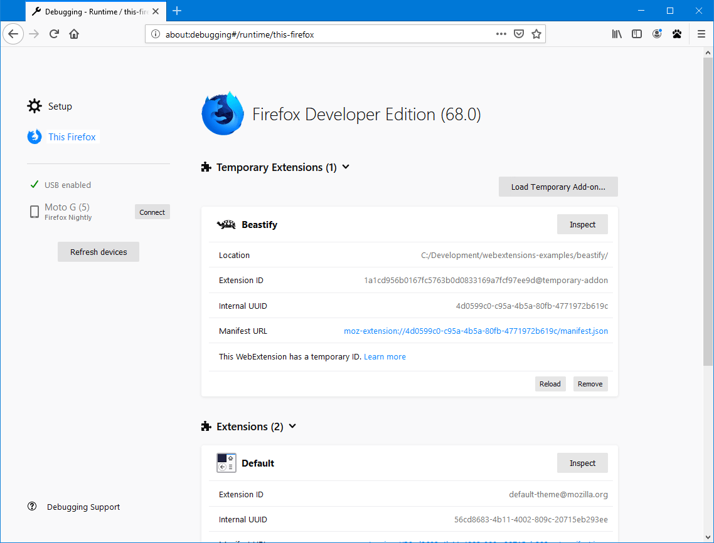
Whether internal extensions appear in the list on this page depends on the setting of the devtools.aboutdebugging.showHiddenAddons preference. If you need to see these extensions, navigate to about:config and make sure that the preference is set to true.
With the Load Temporary Add-on button you can temporarily load a web extension from a directory on disk. Click the button, navigate to the directory containing the add-on and select its manifest file. The temporary extension is then displayed under the Temporary Extensions header.
You don't have to package or sign the extension before loading it, and it stays installed until you restart Firefox.
The major advantages of this method, compared with installing an add-on from an XPI, are:
Once you have loaded a temporary extension, you can see information about it and perform operations on it.
You can use the following buttons:
Other information about the extension is displayed:
If you install an extension in this way, what happens when you update the extension?
manifest.json file again, so changes to permissions, content_scripts, browser_action or any other keys take effectThe permanently installed extensions are listed in the next section, Extensions. For each one, you see something like the following:
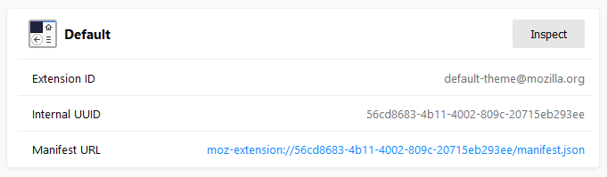
The Inspect button, and the Extension ID and Internal UUID fields are the same as for temporary extensions.
Just as it does with temporarily loaded extensions, the link next to Manifest URL opens the loaded manifest in a new tab.
Note: It's recommended that you use the Browser Toolbox, not the Add-on Debugger, for debugging WebExtensions. See Debugging WebExtensions for all the details.
The Add-ons section in about:debugging lists all web extensions that are currently installed. Next to each entry is a button labeled Inspect.
Note: This list may include add-ons that came preinstalled with Firefox.
If you click Inspect, the Add-on Debugger will start in a new tab.
{{EmbedYouTube("efCpDNuNg_c")}}
See the page on the Add-on Debugger for all the things you can do with this tool.
The Workers section shows all the workers you've got registered on your Firefox, categorized as follows:
You can connect the developer tools to each worker, and send push notifications to service workers.
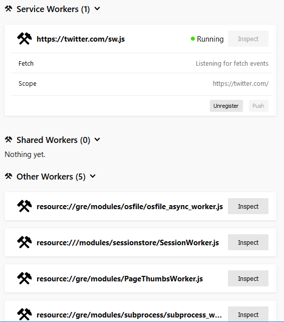
The list of service workers shows the state of the service worker in its lifecycle. Three states are possible:
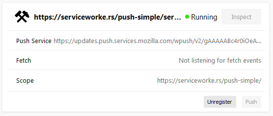
This section uses a simple ServiceWorker demo, hosted at https://serviceworke.rs/push-simple/.
Note: From Firefox 79 onwards, you can access similar information on the Service Workers registered on a particular domain by going to the Firefox DevTools Application panel.
Click the Unregister button to unregister the service worker.
To debug push notifications, you can set a breakpoint in the push event listener. However, you can also debug push notifications locally, without needing the server. Click the Push button to send a push event to the service worker.
A warning message is displayed at the top of the This Firefox tab if service workers are incompatible with the current browser configuration, and therefore cannot be used or debugged.

Service workers can be unavailable if the dom.serviceWorkers.enable preference is set to false in about:config.
Releases of Firefox for Android that are based on version 68 cannot be debugged from desktop Firefox versions 69 or later, because of the difference in release versions. Until such time as Firefox for Android is updated to a newer major release, in synch with desktop Firefox, you should use one of the following Firefox for Android versions:
If you prefer to test with the main release of Firefox for Android (i.e., based on release 68), you can do so with the desktop Firefox Extended Support Release (ESR), which is also based on version 68.
Note that about:debugging is not enabled by default in Firefox ESR. To enable it, open the Configuration Editor (about:config) and set devtools.aboutdebugging.new-enabled to true.
If you used a higher version of Firefox prior to installing Firefox ESR, you will be prompted to create a new user profile, in order to protect your user data. For more information, see What happens to my profile if I downgrade to a previous version of Firefox?